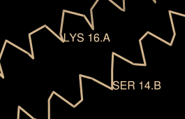
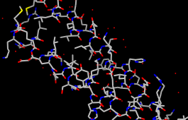

Many tasks in Chimera can be accomplished in multiple ways. For example, colors and display styles can be changed with the Actions menu or by entering commands. In general, commands are more concise and powerful, but menus allow easy access to features without knowledge of commands and their syntax.
In this tutorial, many of the same tasks performed with menus in the Getting Started Tutorial - Menu Version are carried out using commands instead.
To follow along, first download the PDB files included with this tutorial to a convenient location on your computer:
On Windows/Mac, click the chimera icon; on UNIX, start Chimera from the system prompt:
unix: chimeraA splash screen will appear, to be replaced in a few seconds by the main Chimera graphics window or Rapid Access interface (it does not matter which, the following instructions will work with either). If you like, resize the Chimera window by dragging its lower right corner.
Use the Favorites menu to show the Command Line. Now open a structure. Enter the command:
Command: openand use the resulting file browser to locate and open the previously downloaded file 1zik.pdb. The structure is a leucine zipper formed by two peptides.
A preset is a predefined combination of display settings. Apply interactive preset #2:
Command: preset apply int 2
This displays all atoms and color-codes atoms other than carbon by element (oxygens red, nitrogens blue, etc.); carbons are left in the initial model color, in this case tan.
Try moving the structure with the mouse in the main graphics window. By default:
|
Show the Side View for interactive scaling and clipping:
Command: start Side ViewIt is also listed in the Favorites menu by default. It shows a tiny version of the structure. Within the Side View, try moving the eye position (the small square) and the clipping planes (vertical lines) with the left mouse button. The Side View will renormalize itself after movements, so that the eye or clipping plane positions may appear to “bounce back,” but your adjustments have been applied.
Continue moving and scaling the structure with the mouse in the graphics window and Side View as desired throughout the tutorial. When the mouse focus is in the graphics window (you may need to click into it if you have been interacting with a different window), hovering the mouse cursor over an atom or bond (without clicking any buttons) will show identifying information in a pop-up “balloon.” The balloon will disappear when the cursor is moved away.
A Chimera command may include arguments and/or an atom specification. For example, in the following,
Command: color hot pink :lysthe color name hot pink is an argument of the command color, and :lys specifies all residues named LYS.
| Atom Specification Symbols | ||
|---|---|---|
| Symbol | Meaning | Usage |
| # | model | #model (model ID number) |
| : | residue | :residue (residue name or number) |
| :. | chain | :.chain (chain ID) |
| @ | atom | @atom (atom name) |
| = | partial wildcard | matches partial atom or residue name, e.g., @C= specifies all atoms with names beginning with C |
| ? | single-character wildcard |
matches single character in atom or residue name, e.g., :G?? specifies all residues with three-letter names beginning with G |
A blank specification is interpreted as all applicable items. For example,
Command: color hot pinkmakes all atoms (and their labels, surfaces, etc.) hot pink.
Many commands have “~” versions that perform the opposite function. The following will change a structure back to its default color:
Command: ~colorThe command help can be used to show the manual page for any command. For example,
Command: help colorshows the manual page for the command color. The Chimera Quick Reference Guide (PDF) lists most commands and gives some examples of command-line atom specification.
Thicken the lines and display only the atoms named CA (α-carbons):
Command: linewidth 3By default, picking from the screen (a type of selection) is done by clicking on the atom or bond of interest with the left mouse button while pressing the Ctrl key. To add to an existing selection, also press Shift. Try picking two α-carbons, one from each peptide chain (Ctrl-click the first, Shift-Ctrl-click the second). The selection is highlighted in green, and the magnifying glass icon near the bottom right of the window is also green:
Command: show @ca
 , indicating that something is selected.
, indicating that something is selected.
The word selected, sel, or picked can be used in commands to specify the current selection. Label the atoms you have selected:
Command: label selThe label command shows atom information (atom name, by default). Undisplay the atom labels, then show labels for the residues containing the selected atoms:
| residue labels |
|---|
|  |
Command: ~labelEach residue label is of the form:
Command: rlabel sel
res_name res_number.chainOne peptide is chain A and the other is chain B. Use the Favorites menu to show the Preferences, change to Category: Labels, and adjust the Label font and size as you wish. Click Save before closing the preferences if you want the settings to apply to later uses of Chimera.
Clear the selection by Ctrl-clicking in empty space, as if picking “nothing.” Turn off the labels:
Command: ~rlabelColor the two chains different colors; note that commands can be truncated to unique strings:
Command: color cyan :.aResidues and atoms can also be specified, along with or independent of chain:
Command: col yellow :.b
Command: col orange :5-9.a,12.a,8.bThe structure also includes water, which can be shown with:
Command: col magenta :14-18
Command: disp :leu.b
Command: col green :leu.b@cb
Command: disp solventDisplay the full backbone of chain A:
-OR- (equivalent)
Command: disp :hoh
Command: disp :.a@n,ca,c,oDisplay all atoms in chain A only:
Command: show :.a
| coloring by element |
|---|
|  |
Display all atoms and color them by element:
Command: dispColoring byelement is the same as byhet except it also color-codes carbons (gray). Heteroatom-only coloring is useful for keeping different structures distinguishable by their different carbon colors.
Command: col byelement
Generally, each file of coordinates opened in Chimera becomes a model with an associated model ID number. Models are assigned successive numbers starting with 0. The Active models line right under the Command Line shows which models are activated for motion. The checkbox for 0 is activated. Unchecking the box makes it impossible to move model 0. Checking the box again restores the movable state.
Command: close 0closes the model. Go on to Part 2 below, OR exit from Chimera with the following command:
Command: stop
With Chimera started and the Command Line opened as described at the beginning of Part 1, choose the menu item File... Open. Use the resulting file browser to locate and open the previously downloaded file 1d86.pdb. It contains the molecule netropsin bound to double-helical DNA.
Move and scale the structure with the mouse in the graphics window and Side View as desired throughout the tutorial.
Apply the “all atoms” preset, which will show the DNA as wire and netropsin as spheres:
Command: preset apply int 2Color carbons white, then undisplay the water:
Command: color white C
Command: ~disp solvent
 |
Command: color blue :da
Command: color cyan :dc
Command: color yellow :dg
Command: color magenta :dt
Next, try some different display styles, or representations.
Command: represent sphere
Command: repr bs :.a
Command: rep stick
 |
Notice that commands (but not necessarily their keyword arguments) can be truncated to unique strings. For example, the command represent can be shortened to repr or rep but not re (because other commands also start with re), whereas its keywords stick, sphere, etc. cannot be truncated. If the truncation is not unique, one of the corresponding commands will be executed, but it may not be the one intended.
Showing ribbon automatically hides the mainchain (backbone) atoms.
Command: ribbon
Command: ribrep edged
Command: ribr rounded
DNA can be shown with special nucleotide objects. We will show “lollipops,” boxes with orientation bumps, and then a ladder. You can copy and paste into the Command Line. The command-line contents can be edited, and past commands can be accessed using the up and down arrow keys or Ctrl-p (previous) and Ctrl-n (next).
Command: nuc side tube/slab shape ellipsoid orient false style skinnyTo return to more general display styles, turn off the nucleotide objects:
Command: nuc side tube/slab shape box orient true style skinny :8-10.a
Command: nuc side ladder radius 0.3
Command: ~nucHide the ribbons and show everything as ball-and-stick:
Command: ~ribbon
Command: rep bs
 |
Finally, have some fun with the surface command. There are built-in categories within structures such as main and ligand; when nothing is specified, surface shows the surface of main.
Command: surfaceSurface color can be specified separately from the colors of the underlying atoms. The ligand surface is tan and white because the original model color (tan) is used for surfaces of atoms not explicitly recolored by the user, and above, only the carbon atoms were changed to white. Show the ligand surface as red mesh:
Command: ~surf
Command: surf ligand
-OR- (equivalent)
Command: surf :nt
Command: surfrep mesh
Command: color red,s ligand
Command: surfrep solid
 |
Command: ~surfSometimes it is helpful to make a surface transparent:
Command: surf :da,dt
Command: ~surf
Command: surf :da.b,dt.b
Command: transp 50,sWhen finished, exit from Chimera:
Command: stop now